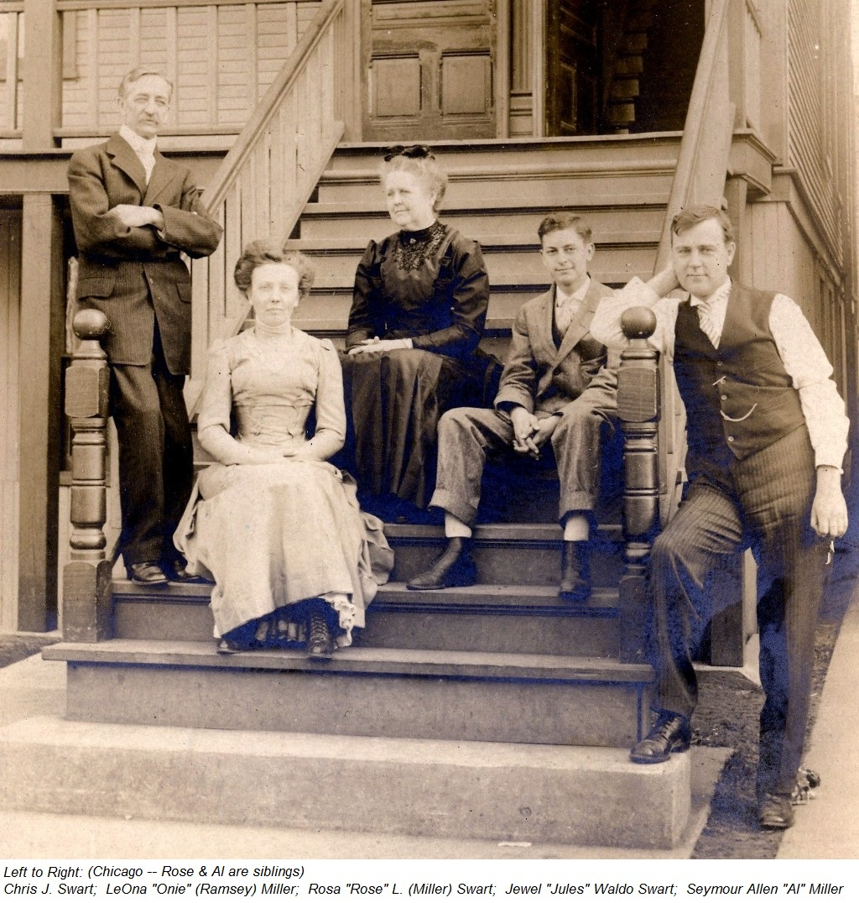
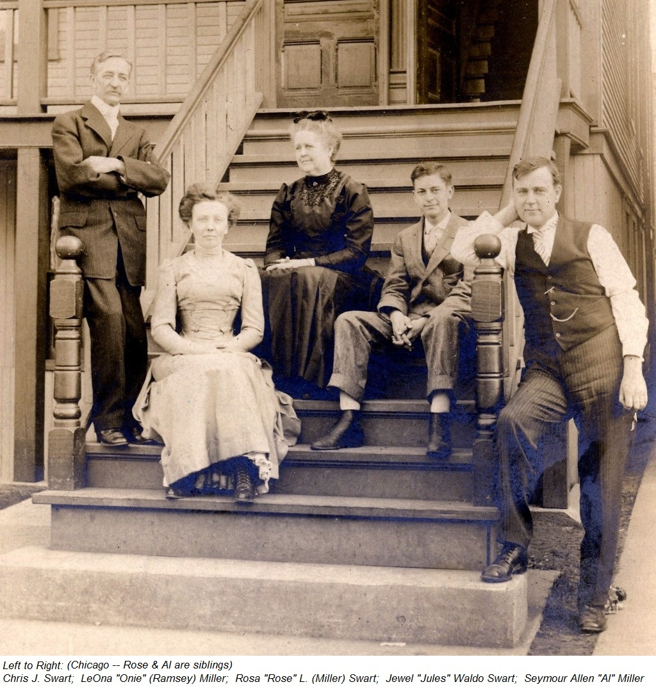

|
|
|
|
|
|
|
|
|
Jewell "Jules" Waldo SWART
(1895-1941)
.jpg "Jules Waldo Swart
1900's
Chicago
(Click on Picture to View Full Size)")  
Jewell "Jules" Waldo SWART (1895-1941) |
Jewell "Jules" Waldo SWART 1 2 3 4
MILITARY: World War I; Indiana Field Clerk AGD, Camp Meade, Maryland; Enlisted 21 Jun 1918; Discharged 27 May 1919; Service No. 293 68 53
-- Photos courtesy of G.A. Miller Jewell married Beatrice Mary CROWE, daughter of David Davie CROWE and Ada DEARTH, on Nov 27, 1920 in Chicago, Cook County, Illinois. (Beatrice Mary CROWE was born on Nov 28, 1896 in Chillicothe, Ross County, Ohio and died on Nov 28, 1988 in Reseda, Los Angeles County, California.) |
 General Notes:
General Notes: